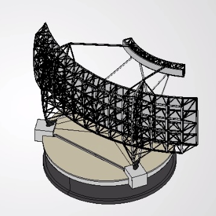
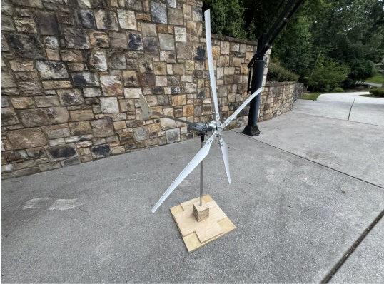
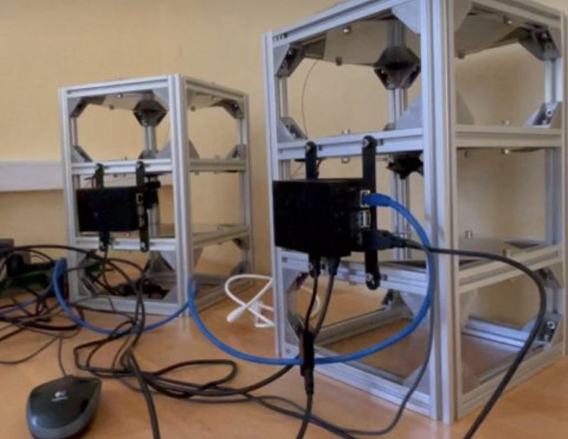

Engineering Projects
CAD Modeling, FEA Simulations, Hardware Iteration, and Scientific Research

Trinity Neutrino Observatory VIP
SolidWorks 3D CAD modeling, structural ANSYS FEA simulations under extreme mountain weather conditions, and hardware deployment shifts.
Explore Project
GT Racing Clubs (Off-Road & Solar)
Custom suspension geometry design, stress/fatigue analysis in ANSYS, and lightweight composite integrations for competitive racing vehicles.
Explore Project
Wind Turbine Aerodynamic Study
Design, build, and power output validation of a hoverboard motor wind turbine producing 15-20W of continuous power.
Explore Project
GSU Cosmic Ray & Physics Research
Python data visualizations across 20 years of cosmic ray flux, subterranean soil moisture detection, and particle detector assembly.
Explore Project